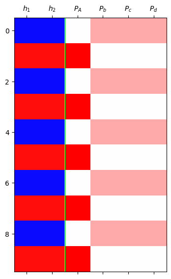
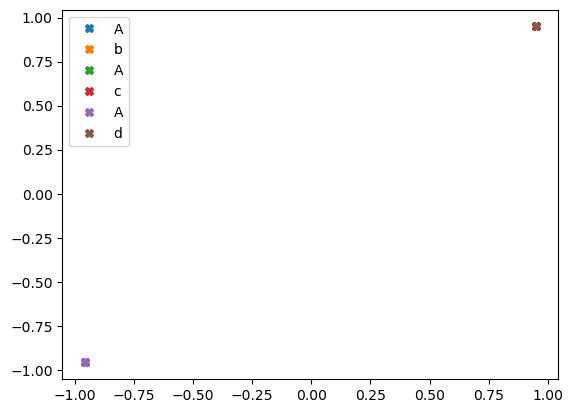
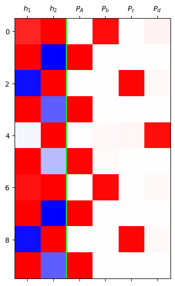
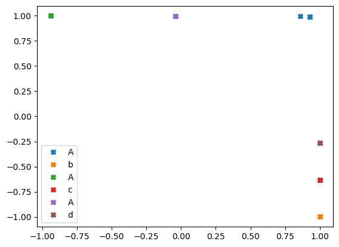

import torch
import pandas as pd
import matplotlib.pyplot as pltDeep Learning 9
1.Imports
soft = torch.nn.Softmax(dim=1)2.AbAcAd - 실패
A. Data
txt = list('AbAcAd'*50)
txt[:10]['A', 'b', 'A', 'c', 'A', 'd', 'A', 'b', 'A', 'c']df_train = pd.DataFrame({'x':txt[:-1], 'y':txt[1:]})
df_train[:5]| x | y | |
|---|---|---|
| 0 | A | b |
| 1 | b | A |
| 2 | A | c |
| 3 | c | A |
| 4 | A | d |
x = torch.tensor(df_train.x.map({'A':0,'b':1,'c':2,'d':3}))
y = torch.tensor(df_train.y.map({'A':0,'b':1,'c':2,'d':3}))B. 풀이 - 실패
net = torch.nn.Sequential(
torch.nn.Embedding(4,2),
torch.nn.Tanh(),
torch.nn.Linear(2,4)
)
ebdd , tanh , linr = net
ebdd.weight.data = ebdd.weight.data*0 +0.1
linr.weight.data = linr.weight.data*0 +0.1
linr.bias.data = linr.bias.data*0 +0.1
#
loss_fn = torch.nn.CrossEntropyLoss()
optimizr = torch.optim.Adam(net.parameters(),lr=0.1)
for epoc in range(200):
# 1
netout = net(x)
# 2
loss = loss_fn(netout,y)
# 3
loss.backward()
# 4
optimizr.step()
optimizr.zero_grad()h = tanh(ebdd(x))
yhat = soft(net(x))
mat = torch.concat([h,yhat],axis=1).data[:10]
plt.matshow(mat,cmap="bwr",vmin=-1,vmax=1)
plt.axvline(1.5,color="lime")
plt.xticks(ticks=range(6),labels=[r"$h_1$",r"$h_2$",r"$P_A$",r"$P_b$",r"$P_c$",r"$P_d$"]);
- 흠..망했네 뭐가 문제지?
net(x)tensor([[-3.8668, 3.6836, 3.6836, 3.6836],
[ 5.4879, -4.9081, -4.9081, -4.9081],
[-3.8668, 3.6836, 3.6836, 3.6836],
...,
[-3.8668, 3.6836, 3.6836, 3.6836],
[ 5.4879, -4.9081, -4.9081, -4.9081],
[-3.8668, 3.6836, 3.6836, 3.6836]], grad_fn=<AddmmBackward0>)- b,c,d를 구분하지 못한다
C. 실패한 풀이의 다른 구현1
x = torch.tensor(df_train.x.map({'A':0,'b':1,'c':2,'d':3}))
y = torch.tensor(df_train.y.map({'A':0,'b':1,'c':2,'d':3}))
X = torch.nn.functional.one_hot(x).float()
y = torch.nn.functional.one_hot(y).float()사용자 정의 Hnet를 사용
class Hnet(torch.nn.Module):
def __init__(self):
super().__init__()
self.i2h = torch.nn.Linear(4,2,bias=False)
self.tanh = torch.nn.Tanh()
def forward(self,X):
h = self.tanh(self.i2h(X))
return h
hnet = Hnet()
linr = torch.nn.Linear(2,4)
hnet.i2h.weight.data = hnet.i2h.weight.data*0 + 0.1
linr.weight.data = linr.weight.data*0 + 0.1
linr.bias.data = linr.bias.data*0 + 0.1
#
loss_fn = torch.nn.CrossEntropyLoss()
optimizr = torch.optim.Adam(list(hnet.parameters())+list(linr.parameters()),lr=0.1)
#---#
for epoc in range(200):
# 1
h = hnet(X)
netout = linr(h)
# 2
loss = loss_fn(netout,y)
# 3
loss.backward()
# 4
optimizr.step()
optimizr.zero_grad()\(h\)를 만들고 그 후에 linr를 태운 것.
linr(hnet(X))tensor([[-3.8668, 3.6836, 3.6836, 3.6836],
[ 5.4879, -4.9081, -4.9081, -4.9081],
[-3.8668, 3.6836, 3.6836, 3.6836],
...,
[-3.8668, 3.6836, 3.6836, 3.6836],
[ 5.4879, -4.9081, -4.9081, -4.9081],
[-3.8668, 3.6836, 3.6836, 3.6836]], grad_fn=<AddmmBackward0>)- 당연히 linr의 순서만 뒤로 미뤘으니 값은 똑같음
- 예비학습
X = torch.tensor(
[[1., 0., 0., 0.],
[0., 1., 0., 0.]]
)
linr = torch.nn.Linear(4,2)linr(X)tensor([[ 0.5355, -0.0576],
[ 0.6262, 0.2586]], grad_fn=<AddmmBackward0>)linr(X[[0]]),linr(X[[1]])(tensor([[ 0.5355, -0.0576]], grad_fn=<AddmmBackward0>),
tensor([[0.6262, 0.2586]], grad_fn=<AddmmBackward0>))linr(X[0]),linr(X[1])(tensor([ 0.5355, -0.0576], grad_fn=<ViewBackward0>),
tensor([0.6262, 0.2586], grad_fn=<ViewBackward0>))- 이렇게 행별로 뽑아서 linr를 할 수 있다.
D. 실패한 풀이의 다른구현2
x = torch.tensor(df_train.x.map({'A':0,'b':1,'c':2,'d':3}))
y = torch.tensor(df_train.y.map({'A':0,'b':1,'c':2,'d':3}))
X = torch.nn.functional.one_hot(x).float()
y = torch.nn.functional.one_hot(y).float()class Hnet(torch.nn.Module):
def __init__(self):
super().__init__()
self.i2h = torch.nn.Linear(4,2,bias=False)
self.tanh = torch.nn.Tanh()
def forward(self,X):
h = self.tanh(self.i2h(X))
return h
hnet = Hnet()
linr = torch.nn.Linear(2,4)
hnet.i2h.weight.data = hnet.i2h.weight.data*0 + 0.1
linr.weight.data = linr.weight.data*0 + 0.1
linr.bias.data = linr.bias.data*0 + 0.1
#
loss_fn = torch.nn.CrossEntropyLoss()
optimizr = torch.optim.Adam(list(hnet.parameters())+list(linr.parameters()),lr=0.1)
#---#
L = len(X)
for epoc in range(200):
# 1~2
loss = 0
for t in range(L):
Xt,yt = X[t],y[t]
ht = hnet(Xt)
ot = linr(ht)
loss = loss + loss_fn(ot,yt)
loss = loss/L
# 3
loss.backward()
# 4
optimizr.step()
optimizr.zero_grad()\(y[t]\)는 답지 느낌이고 \(X[t]\)는 문제지이다. X[t]를 hnet에 태우고 linr을 하고 나서 답지랑 비교하는 것이라고 생각하면 된다.
linr(hnet(X))tensor([[-3.8668, 3.6836, 3.6836, 3.6836],
[ 5.4879, -4.9081, -4.9081, -4.9081],
[-3.8668, 3.6836, 3.6836, 3.6836],
...,
[-3.8668, 3.6836, 3.6836, 3.6836],
[ 5.4879, -4.9081, -4.9081, -4.9081],
[-3.8668, 3.6836, 3.6836, 3.6836]], grad_fn=<AddmmBackward0>)여전히 똑같이 구분하지 못한다.
E. 임베딩 공간의 해석
h = hnet(X)h.shapetorch.Size([299, 2])h1,h2 = h.T.data
# h1 = h[:,0].data
# h2 = h[:,1].dataplt.plot(h1[::6],h2[::6],'X',label="A")
plt.plot(h1[1::6],h2[1::6],'X',label="b")
plt.plot(h1[2::6],h2[2::6],'X',label="A")
plt.plot(h1[3::6],h2[3::6],'X',label="c")
plt.plot(h1[4::6],h2[4::6],'X',label="A")
plt.plot(h1[5::6],h2[5::6],'X',label="d")
plt.legend()
- b,c,d는 사실상 같은 문자로 취급하고 있다. 하지만 b,c,d는 문맥상 다른 것들인데.. 어떻게 할까?
4. AbAcAd - 성공
x = torch.tensor(df_train.x.map({'A':0,'b':1,'c':2,'d':3}))
y = torch.tensor(df_train.y.map({'A':0,'b':1,'c':2,'d':3}))
X = torch.nn.functional.one_hot(x).float()
y = torch.nn.functional.one_hot(y).float()class rNNCell(torch.nn.Module):
def __init__(self):
super().__init__()
self.i2h = torch.nn.Linear(4,2)
self.h2h = torch.nn.Linear(2,2)
self.tanh = torch.nn.Tanh()
def forward(self,Xt,ht):
ht = self.tanh(self.i2h(Xt) + self.h2h(ht))
return ht
torch.manual_seed(43052)
rnncell = rNNCell()
cook = torch.nn.Linear(2,4)
loss_fn = torch.nn.CrossEntropyLoss()
optimizr = torch.optim.Adam(list(rnncell.parameters()) + list(cook.parameters()), lr = 0.1)
L = len(X)
for epoc in range(200):
ht = torch.zeros(2)
loss = 0
for t in range(L):
Xt,yt = X[t],y[t]
ht = rnncell(Xt,ht)
ot = cook(ht)
loss = loss + loss_fn(ot,yt)
loss = loss/L
# step3
loss.backward()
# step4
optimizr.step()
optimizr.zero_grad()h = torch.zeros(L,2)
water = torch.zeros(2)
h[0] = rnncell(X[0],water)
for t in range(1,L):
h[t] = rnncell(X[t],h[t-1])
yhat = soft(cook(h))
yhat tensor([[4.1978e-03, 9.4555e-01, 1.9557e-06, 5.0253e-02],
[9.9994e-01, 5.5569e-05, 8.4751e-10, 1.3143e-06],
[2.1349e-07, 1.1345e-06, 9.7019e-01, 2.9806e-02],
...,
[2.1339e-07, 1.1339e-06, 9.7020e-01, 2.9798e-02],
[9.9901e-01, 9.6573e-04, 6.9303e-09, 2.1945e-05],
[7.2919e-04, 2.5484e-02, 3.3011e-02, 9.4078e-01]],
grad_fn=<SoftmaxBackward0>)mat = torch.concat([h,yhat],axis=1).data[:10]
plt.matshow(mat,cmap='bwr',vmin=-1,vmax=1)
plt.axvline(x=1.5,color='lime')
plt.xticks(range(6),[r'$h_1$',r'$h_2$',r'$P_A$',r'$P_b$',r'$P_c$',r'$P_d$']);
- 임베딩 스페이스 분석
h1,h2 = h.T.data
plt.plot(h1[::6],h2[::6],'X',label="A")
plt.plot(h1[1::6],h2[1::6],'X',label="b")
plt.plot(h1[2::6],h2[2::6],'X',label="A")
plt.plot(h1[3::6],h2[3::6],'X',label="c")
plt.plot(h1[4::6],h2[4::6],'X',label="A")
plt.plot(h1[5::6],h2[5::6],'X',label="d")
plt.legend()